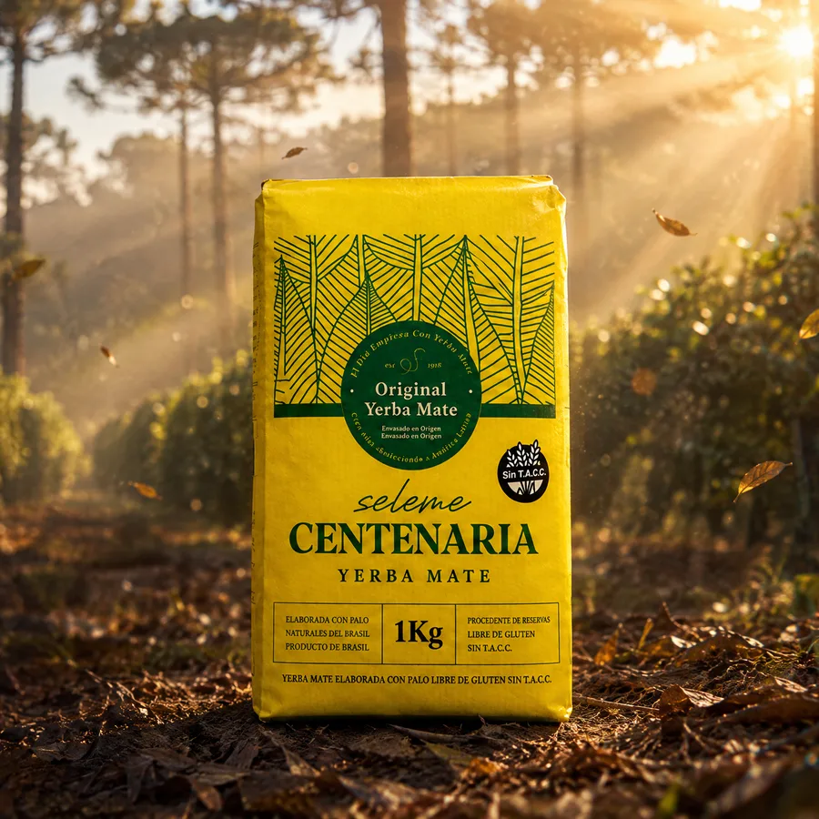
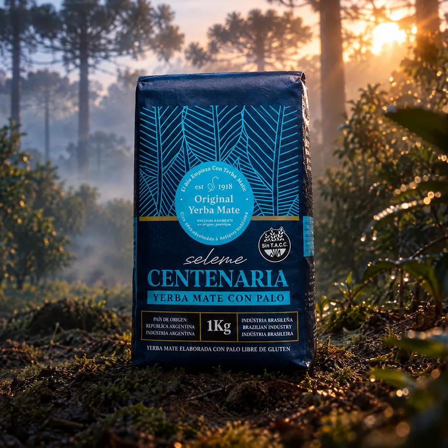
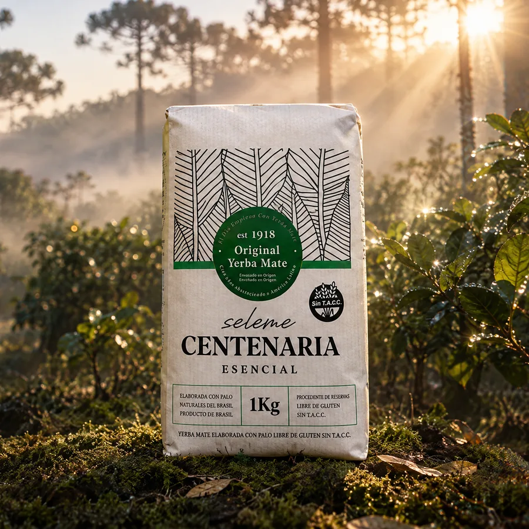

Yerba Mate Desde 1918
El día empieza con yerba mate.
Directamente del corazón de la región donde crecen las plantas de yerba más sabrosas del planeta. Un sabor suave, dulce y bien equilibrado.
Nuestra esencia
No es solo yerba,
es felicidad.
El mate no se toma: se comparte. Es la primera ronda de la mañana, la excusa para juntarse, el compañero de las charlas que no tienen apuro. En cada cebada hay un ritual que nos une desde hace generaciones.
Por eso hacemos Seleme Centenaria: una yerba de calidad premium, con más de cien años de oficio detrás, para que ese momento tuyo sea siempre el mejor del día.
Desde 1918, en cada mate argentino.
01 Nuestra historia
Más de 100 años
de oficio matero
Seleme Centenaria nace en 1918 de la mano de la familia Seleme, en el corazón de la región yerbatera del sur de Brasil, donde nacen y crecen las hojas más ricas del planeta. Hoy llega a cada mate argentino desde Gualeguaychú, Entre Ríos.
-
1918
Comienza la historia. La familia Seleme funda el oficio de elegir y elaborar la mejor yerba, hoja por hoja.
-
+100
Años abasteciendo a América Latina, con la yerba elaborada y envasada en origen, calidad premium.
-
Hoy
Una línea completa que combina tradición, sabor y una identidad de marca inconfundible.
La ervateira Seleme, hoy, en el sur de Brasil. Donde empezó todo.
02 Del yerbal a tu mate
Donde nacen las hojas
más ricas del planeta
Elaborada con hojas nativas seleccionadas, procedentes de reservas naturales del sur de Brasil, y envasada en origen. Un padrón uruguayo de molienda fina y alto contenido de hoja, que da un mate suave, naturalmente dulce y sin acidez.
Por qué es distinta
-
Hoja nativa de reserva natural
Perfil naturalmente dulce: no necesita azúcar.
-
Microclima selvático, menos sol directo
Menos amargor. Mate suave.
-
Padrón uruguayo, molienda fina
Mucha hoja, poco polvo: no se tapa y rinde más.
-
Sin acidez
Se puede tomar todo el día. Mate largo y parejo.
-
Envasada en origen
No se rompe la cadena: consistencia paquete a paquete.
-
Desde 1918
Oficio, no receta nueva. La de siempre.
03 Nuestra línea
Una yerba
para cada mate
Tres variedades pensadas para cada gusto y cada momento, con el sabor característico de Centenaria y presentaciones de 500 g y 1 kg.
-

Original
Padrón uruguayo la clásica -

Azul Con Palo
Mistura de dos padrones -

Esencial
Blend con carácter
Perfil de sabor
¿Cómo te gusta tu mate?
De lo más suave a lo más intenso, en Centenaria hay una yerba para cada paladar. Usá esta guía para encontrar la tuya.
- Suave Original Suave · dulce · sin acidez
- Equilibrado Azul · Con Palo Cuerpo medio · con palo
- Intenso Esencial Con carácter · más fibra
04 Por qué elegirla
Más que un sabor,
un compañero diario
-
Energía natural
Acompaña tus mañanas y tu concentración a lo largo del día.
-
Rico en antioxidantes
Propiedades naturales de la hoja de yerba mate.
-
Sin T.A.C.C.
Libre de gluten, apta para toda la familia.
-
Rinde más
Molienda fina y alto contenido de hoja: más cebadas por mate.
-
No produce acidez
Suave y equilibrada, para tomar todo el día.
-
Calidad premium
Envasada en origen, con más de 100 años de oficio.
Del desayuno en la cancha a la playa: donde va un argentino, va Centenaria.
05 El ritual
El mate perfecto,
paso a paso
-
01
Cargá el mate
Llená el mate hasta tres cuartos con Centenaria. Tapalo con la mano, dalo vuelta y agitá suave para que el polvo quede arriba.
-
02
Incliná la yerba
Volvé el mate a su posición dejando la yerba en pendiente. Así se forma el hueco donde va la bombilla.
-
03
Primer hilo de agua tibia
Humedecé el sector más bajo con agua tibia y esperá un momento. Esto protege la yerba y hace que dure más lavados.
-
04
Colocá la bombilla
Tapá la punta con el pulgar e insertala en el hueco húmedo, sin revolver, hasta el fondo.
-
05
Cebá y disfrutá
Agua a 70–80 °C (que no hierva) siempre sobre el mismo lado. Cebá parejo y a compartir la ronda.
Tip Centenaria: nunca uses agua hirviendo. El secreto de un mate suave y sin amargor está en la temperatura justa.

06 Puntos de venta
Dónde comprar
Conseguí Centenaria en los puntos de venta de tu zona, o comprala online y te llega a todo el país.
-
Online, a todo el país
Envíos con Andreani, Correo Argentino, OCA y Vía Cargo. Retiro en CABA, Córdoba, Rosario y Santa Fe. Entre 3 y 7 días hábiles desde que se acredita el pago.
-
En tu zona
Buscá tu provincia y te decimos dónde conseguirla. Si todavía no llegamos, podés comprarla online — o, si tenés un comercio, ser vos quien la traiga.
07 Para comercios y distribuidores
Distribuí Centenaria.
¡Sumate!
Contamos con precio competitivo para distribución y comercios. Escribinos y te enviamos la lista mayorista, condiciones y opciones de envío a todo el país.
Escribinos por WhatsApp.
Contanos qué cantidad aproximada te interesa.
Te mandamos la lista de precios según tu escala.
Coordinamos pago y entrega.
Donde hay mate,
hay Centenaria.
El día empieza con yerba mate.